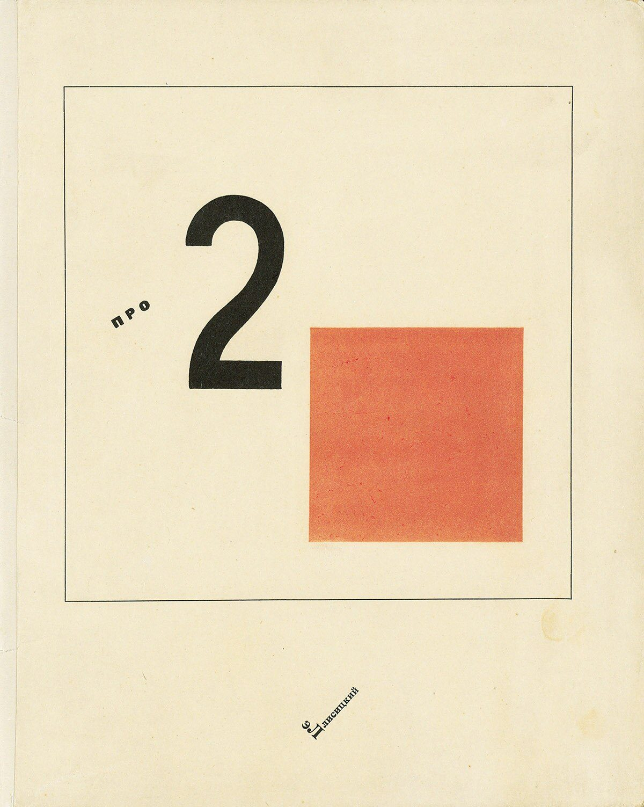

References / Book / 101
About Two Squares
El Lissitzky’s “suprematist tale in six constructions” is a picture book whose characters are a red square and a black square.
- Source
- Suprematicheskii Skaz (About 2 Squares), El Lissitzky, 1922
- Creator
- El Lissitzky
- Made
- Conceived 1920 in Vitebsk; published 1922 in Berlin
- Style
- Constructivism (agent-proposed, not yet reviewed by a person)
- Moods
- Elemental, didactic, spare
- Evidence
- Downloaded and inspected the cover and the first spread of a copy sold at Swann Galleries, sale 2568, lot 244, through its Commons copies (cover, 1200 × 1503 px; spread, 1200 × 752 px). A pencil note on the endpaper of this copy appears to read “zdenek rossmann geschenkt von jan tschichold 1932” (given to Zdeněk Rossmann by Jan Tschichold).
- Reviewed
- Rights
- Open license, stored. License: public domain. Rights policy


Context
The full title is Pro dva kvadrata. Suprematicheskii skaz v 6-ti postroikakh (About Two Squares: A Suprematist Tale of Two Squares in Six Constructions). MoMA (title only; the page was not read).
Lissitzky conceived the book in 1920 at UNOVIS in Vitebsk. The Scythian press published it in Berlin in 1922, and it was printed by letterpress in Leipzig, including the slanted text and the illustrations. ibiblio.
Observed
- The cover is cream paper with a thin black square frame.
- Inside the frame, a large black sans-serif numeral “2” stands to the left and a flat red square to its lower right.
- The word “ПРО” (about) is set small in black spaced capitals and slightly tilted, to the left of the numeral.
- Lissitzky’s name is set small on a steep diagonal below the frame.
- In the first spread, the right page is solid black. A large white letter Р leans to the right, and the rest of the word “РЕБЯТКАМ” (to the children) curves around its bowl in black letters on white. Two small white labels read “ВСЕМ” (to all), one of them tilted.
Why it belongs
The book shows the source of the style’s red square, black square, and rotated labels: the Suprematist vocabulary of Malevich, turned by Lissitzky into a narrative sequence.
Most of the page is empty paper. The measurement finds one hue and 9% chromatic area, the same as the Red Wedge poster.
Borrow
Pair one large numeral or letter with one red square inside a thin frame for a cover or a section opener.
Build a heading around a single oversized letter and let the rest of the word follow its curve.
Measured
Machine-extracted by tools/image-traits.py on . Full measurement.
- Mean chroma
- 0.19
- Palette
- #f0e5c7 87%
- #df7654 9%
- #2c2c21 2%
- #e7dbbb 1%
- #c9bda2 1%
- #a29e89 1%
- #626051 0%

